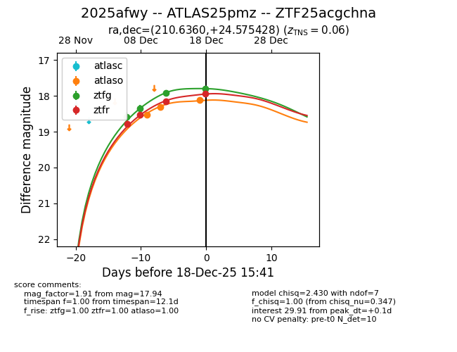
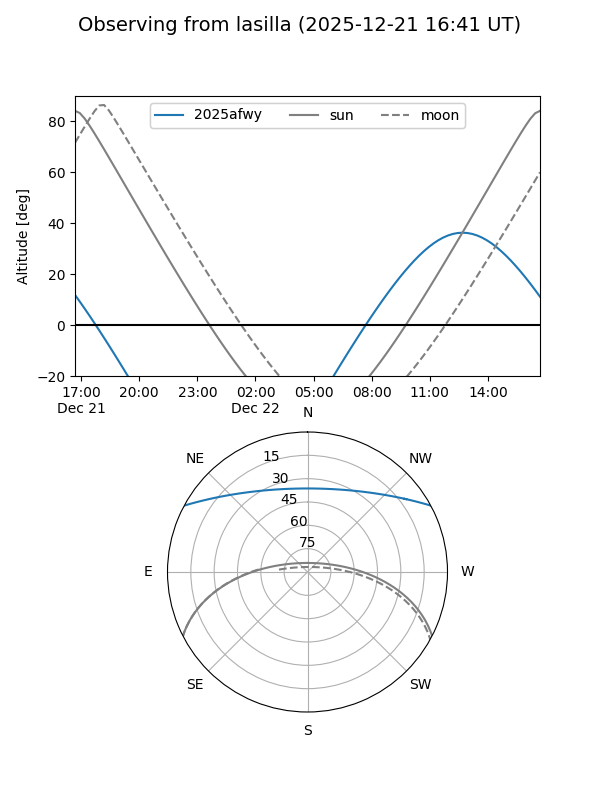
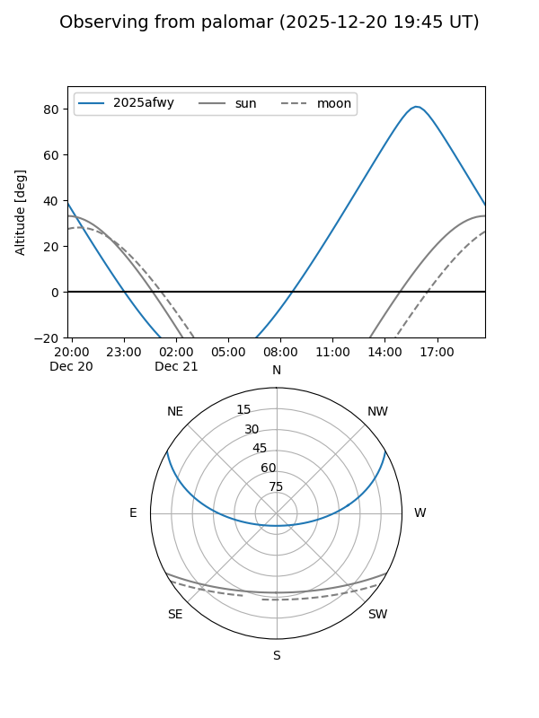
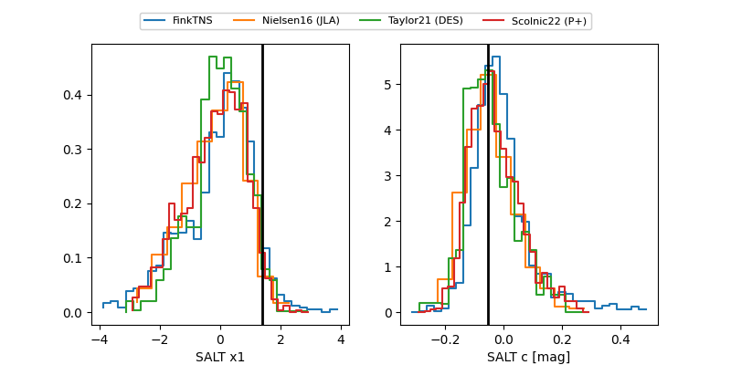

2025afwy
Target 2025afwy at 2025-12-28 13:22
Aliases and brokers:
FINK: fink-portal.org/ZTF25acgchna
Lasair: lasair-ztf.lsst.ac.uk/objects/ZTF25acgchna
ALeRCE: alerce.online/object/ZTF25acgchna
TNS: wis-tns.org/object/2025afwy
YSE: ziggy.ucolick.org/yse/transient_detail/2025afwy
alt names
ZTF25acgchna (ztf,fink_ztf)
2025afwy (tns,yse)
ATLAS25pmz (atlas)
Coordinates:
equatorial (ra, dec) = 210.6360,+24.57543
equatorial (HMS+DMS) = 14:02:32.65,+24:34:31.54
galactic (l, b) = (27.8397,+73.81440)
Flags:
Photometry:
last atlaso=18.12, ztfg=18.27, ztfr=17.91
3 atlaso, 6 ztfg, 5 ztfr detections
Lightcurve

Visibility


Additional plots
